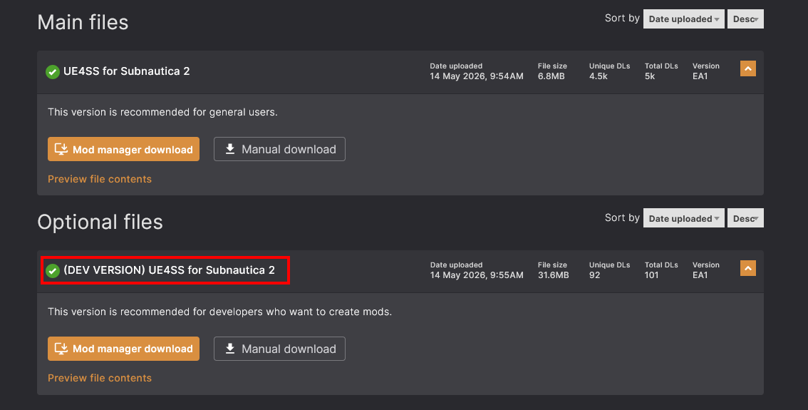
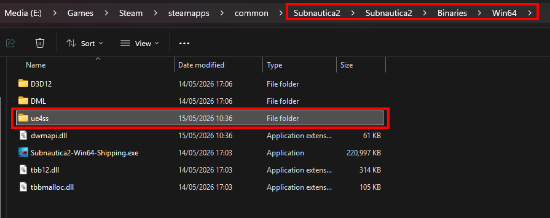
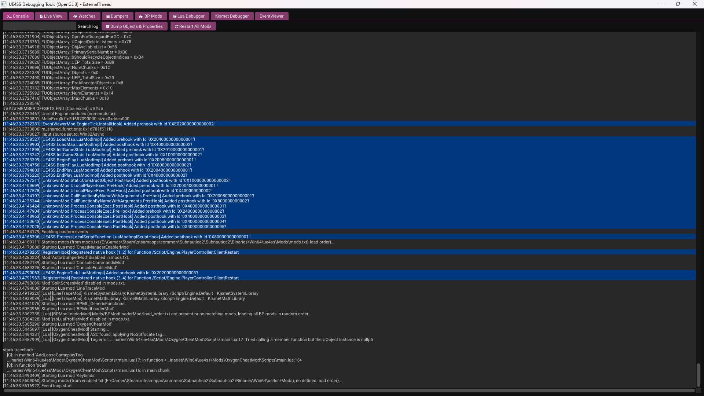

Installing UEE4SS
UE4SS is absolutely essential to modding Subnautica 2, so should be first thing that you install and configure, having set up your git repository and dev folders.
First up, make sure you've downloaded the "DEV" version of UE4SS from Nexus mods:

I prefer the "Manual download" method:
- Download the mod ZIP file and extract the contents to
\Subnautica2\Subnautica2\Binaries\Win64. - Make sure you unzip the contents straight into this folder.
- Don't copy/leave the ZIP file there and don't copy in the wrapper folder from the mod download.
Your Subnautica 2 installation folder should look like this:

You can check it's working by simply launching the game. All being well, you should see the UE4SS window appear:

Add our dev mod folder
We want UE4SS to load mods from our dev folder, as well as from the base game folder. To configure this:
-
Navigate to the folder where you installed UE4SS,
Subnautica2\Subnautica2\Binaries\Win64\ue4ss. -
Find and open the
UE4SS-settings.inifile in Notepad or similar. -
You'll see a section with the text "Additional mods directories to load mods from." Add an entry here to point to the
modsfolder that you created earlier within your local git repository. For example:
; Additional mods directories to load mods from.
; Use + prefix to add a directory, - prefix to remove.
; Can be relative to working directory or absolute paths.
; Note: If multiple directories contain mods with the same name, the last one found will be loaded.
; Example:
; +ModsFolderPaths = ../SharedMods
; +ModsFolderPaths = C:/MyMods
; -ModsFolderPaths = ../SharedMods
; Default: None
+ModsFolderPaths = E:\Dev\UnrealDev\Subnautica2Mods\mods
- UE4SS will now not only load mods that you install in the base game folder, which might include mods from other authors that you want to have in your game, it will also look for the mods that you are developing in your development folder.
At this point, there are a couple of very useful functions of UE4SS that make using other tools even more productive. So while we're here, let's use these functions to generate some useful files for later.
Generate game LUA types
UE4SS can generate LUA class files that essentially describe the functions and properties of accessible objects in the game. These files can be used by VS Code to enable "InteliiSense" functionality that will help you to create and validate your mod code.
You can generate these files as follows:
- With UE4SS installed, launch the game.
- Click the "Dumpers" button at the top of the screen.
- Click the "Generate Lua Types" button.
- This will generate a load of files in
\Subnautica2\Subnautica2\Binaries\Win64\ue4ss\Mods\shared\types. - Copy the entire
sharedfolder into your development folder,Subnautica2Mods\mods\.
Generate a USMAP file
Another useful feature of UE4SS, the "usmap" file that it can generate allows FModel to decode the assets in the game to JSON structures for you to view.
Generate this by following these steps:
- With UE4SS installed, launch the game.
- Click the "Dumpers" button at the top.
- Click the "Generate .usmap file - UnrealMappingsDumper by OutTheShade" button.
- This will create a file in the UE4SS folder:
Subnautica2\Subnautica2\Binaries\Win64\ue4ss\Subnautica2-x.y.z-nnnnn.usmap. The x, y, z, and n, represent different values depending on the version and build of the game. - You can leave that file where it is.
You now have a working mods loader and invaluable tool for developing and testing your own mods.